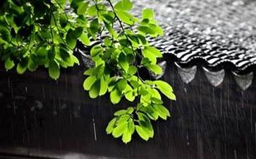

像大多数人一样，对于
但是，我总是很忙，不管是不是真的忙，总有很多忙的理由将放生之事推辞过去，我还是偶尔寄一点点钱给放生的师兄，请他们代我放生或者随喜他们。我觉得，这种方便也很不错，依然有功德，而且不必费事，很“合算”。那时的我发心并不纯正，更象做交易。直到我真正的去放生，才知道放生的过程带给我的收获是意想不到的，不放不知道啊。“在利他中自利”是同一件事情的两面，不偏不倚，不多不少。
放生使母亲病情好转 事情从妈妈的病情加重说起。我妈妈今年六十四岁了，自从父亲去世以后，她的身体越来越差，竟也得了心脏病而且日渐严重，不但行动变得老态迟缓，而且手脚开始不自主地颤抖，医学上称之为“帕金森综合症”。妈妈很
于是我决定周末去放生。无独有偶，还未到周末，偶然在论坛上看到一个贴子，海拉尔的居士们要在中秋节举行大规模地放
放生就是如此的感应迅速！神奇！
第三天，放生的师兄发短信来说晚上八点，所有的狐狸就都放归山林深处了，秋天林子的气侯和成熟的野果会让狐狸很快适应的。当时心里好高兴，仿佛看到一只只从屠刀下被解救出来的可爱狐狸在山林间愉快地飞跃，而它们正是我累世的父母亲人。
接下来两天因为忙我没去看妈妈，第三天中午妈妈到我家里来了，我急着让妈妈快躺下来休息一下，妈妈说，不用了，一点也不累，这两天突然好了，身上有力气了，晚上睡得也安稳。乍听之下，我心里一阵惊喜，感谢上师三宝的加持，放生的功德竟是这样的不可思议。如果说这是一次偶然，那么接下来的事情却让我再也没有一点的怀疑。(注:有位南方的师兄，大孝子，为了给得重病的老母亲
我的儿子今年七周岁了，因为我在怀孕时五欲炽盛，孩子从小瘦弱，常常感冒。最厉害时一年三次肺炎住院。孩子先天气管不好，每次感冒都伴随着长时间的咳嗽。吃药、住院打针少则三百五百，多则一千两千。一位医生曾经这样安慰我“儿童的气管因为发育不完善，所以容易感染，随着年龄的增长，慢慢就好了。”我只好把儿子的
前几天儿子又感冒了，毫无例外的是，首先咽喉发炎红肿，发出很重的咳声，我立即给他服了药，但是象以往一样，病情依旧象一条曼延的毒虫，继续侵入。两天后的晚上，儿子临睡前无力地说“妈妈，我浑身酸疼。”我知道，今晚他要发烧了。看着儿子睡去，我忧愁地走进佛堂，做我的晚课。念诵中，我的心总不能集中，耳朵也总是注意听隔壁的儿子有没有咳声。不由自主中，我下座跪在佛像前，“至尊上师三宝，
当晚，儿子微微有一点低烧，并无大碍，第二天他照常去上学了。接下来的一天，他仍然没有发烧，只是还是咳，药吃完了，我也厌倦了给儿子吃药，它们总是让我恢心，我不能确定药的副作用是不是对孩子的身体伤害更大。第三天是周末，我对儿子说，走，妈妈带你去放生。儿子很高兴，“妈妈，放生什么?”“我们去市场看一下。”儿子带上
因为去的早，市场上人还不多，海鲜市的螃蟹刚从海里打捞上来的，活蹦乱跳。我马上决定放生螃蟹。一大盘螃蟹全包了，大约十三只，我也没跟贩子讲价，因为我想节省路上的时间，贩子对我的“大方”很是高兴，耐心地按我的要求小心将螃蟹装进袋子，付了钱，我们调转车头，向海边奔去。一路上，我只怨自己的电摩托太慢。我们沿着海岸线跑，跑了很远才找到一处安静人少的地方，东西各有垂钓的渔人，距离我们大约二百多米，正好看不清楚我们在干什么，不会给我们放生的螃蟹带来威胁。就在这里吧，我们停了车，儿子一溜小跑在前面开路，穿过一片杂草的沙地，我们来到海边，我边跑边打开袋子，对着袋子大声念了三遍
做完
孩子的心是最纯净的，只此一次，儿子就喜欢上了放生，约我下星期还来，我说，好！两天以后，奇迹再一次给了我震撼，儿子一声也不咳了！如果不是亲身经历，也许我还将无法切身地体会这不可思议的现实。我想，很多放生多年的同修受益和感应更大，只是他们并不执着，最重要的是他们不是为了自身和现世的利益而去做放生的善举。但是我，实在是忍不住要把这喜悦与跟我一样的初学分享，愿所有同修都能多做放生的善业，为利益我们现世的、累世的父母、冤亲债主，积累广大的功德，并将此功德回向无上菩提，早成正果。